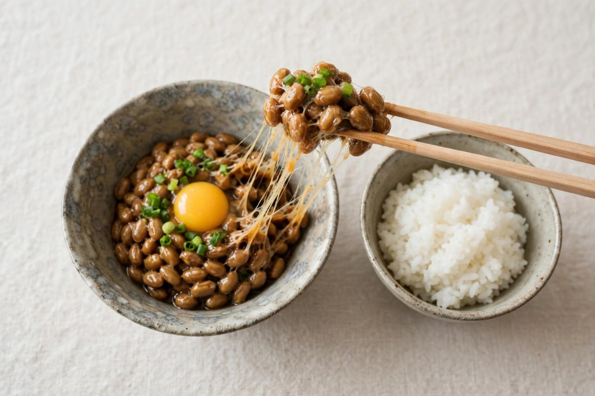

What is natto?
Natto is fermented soybeans: sticky, stringy and strong-smelling. It is a classic Japanese breakfast food that many visitors either love or avoid. Here is what to expect, and what to know if you are avoiding soy.
Quick answer: Natto is fermented soybeans, usually eaten with rice at breakfast. It is sticky, savory and pungent. It contains soy, and the included sauce packet adds soy sauce (soy and wheat) and sometimes fish extract.
What does natto taste and feel like?
Imagine small, soft beans coated in a stretchy, web-like slime. The flavor is nutty and savory, with a tang somewhat like aged cheese, and a smell strong enough to be noticed across a table. Texture is the usual deal-breaker; flavor is the surprise.
How to eat it
- Stir first. Mix the beans with chopsticks 20 to 30 times until they turn creamy and stringy.
- Add the sauce. Each pack has a soy-sauce-based tare and a small packet of mustard (karashi, からし).
- Serve over rice (納豆ごはん), or try it in a sushi roll (納豆巻き, natto maki), on toast, or with egg.
You will find it at hotel and ryokan breakfast buffets, konbini (in small foam packs), supermarkets and set-meal restaurants (teishoku). It is more of a breakfast staple than a dinner dish.
Allergy and diet notes
Natto is made from soybeans, so avoid it with a soy allergy. The sauce packet usually contains soy sauce (soy and wheat), and some contain bonito or other fish extract, so check the pack if you avoid fish. Plain natto is vegetarian. Our soy allergy guide shows where else soy hides, and the dashi guide covers fish stock. For more dishes see oyakodon or our full dish index.
Natto phrases in Japanese
| Japanese (kana) | Romaji | English |
|---|---|---|
| なっとう（納豆） | nattou | natto |
| なっとうごはん（納豆ごはん） | nattou gohan | natto over rice |
| なっとうまき（納豆巻き） | nattou maki | natto sushi roll |
| たれ・からし | tare, karashi | sauce, mustard |
| なっとうはにがてです（納豆は苦手） | nattou wa nigate desu | I don’t like natto |
| なっとうなしでおねがいします（納豆なし） | nattou nashi de onegai shimasu | Without natto, please |
| なっとうは入っていますか？（納豆） | nattou wa haitte imasu ka? | Does this contain natto? |
| だいずアレルギーです（大豆アレルギー） | daizu arerugii desu | I have a soy allergy |
Printable soy allergy card
Natto is soy, so use this card if you are allergic.
私は大豆（納豆・醤油・味噌・豆腐を含む）アレルギーです。
I am allergic to soy (including natto, soy sauce, miso and tofu).
大豆（納豆・醤油・味噌・豆腐を含む）が入っている料理は食べられません。
I cannot eat any dish that contains soy (including natto, soy sauce, miso and tofu).
だしやソース、調味料、揚げ油にも入っていないか、ご確認をお願いします。
Please also check the stock, sauces, seasonings and frying oil.
大豆（納豆・醤油・味噌・豆腐を含む）に触れた調理器具や油は使わないでください。
Please do not use utensils or oil that have touched soy (including natto, soy sauce, miso and tofu).
少量でも命に関わります。
Even a small amount can be life-threatening.
ご協力ありがとうございます。 Thank you for your help. · japanmust.com
Printing tip: set the page to “fit to page”, or take a screenshot and show it on your phone. Delete the last line if your allergy is not severe.
Allergy safety: this is travel information, not medical advice. Restaurants often cannot guarantee an allergen-free meal, and cross-contact in kitchens is common. Carry any prescribed medication and a doctor’s letter, and check current Japanese rules for bringing medicine into the country.
Frequently asked questions
Is natto vegetarian?
Plain natto is, since it is just fermented soybeans. The sauce packet may contain fish or bonito extract, so check the label or skip the sauce.
Does natto contain gluten?
The beans do not, but the included soy sauce usually contains wheat. Use only the mustard, or check the label of the sauce.
Is natto raw?
No. The soybeans are cooked and then fermented. It is sticky because of fermentation, not because it is raw.
Do all Japanese people eat natto?
No. It is popular nationwide but eaten more regularly in eastern Japan. Many people skip it, so it is fine to ask for “納豆なし”.
Related guides
Not sure what is on the menu?
Japan Interpreter scans a Japanese menu offline and explains dishes like 納豆 in plain English, with allergens flagged.
Japan Interpreter: offline camera and text translation for Japan. Allergen flags help, but never replace asking the restaurant.